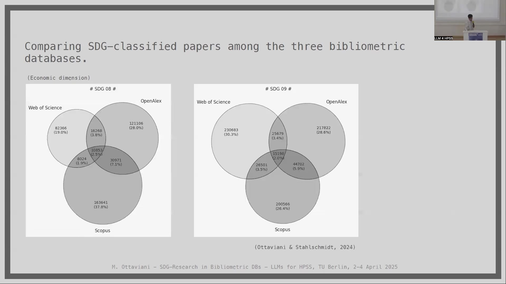

9 The Representation of SDG-Related Research in Bibliometric Databases: A Conceptual Inquiry via LLMs
9.1 Overview
The project investigates the representation of research related to the UN Sustainable Development Goals (SDGs) within major bibliometric databases, specifically Web of Science, Scopus, and OpenAlex. The core objective is to use Large Language Models (LLMs) as a tool to detect potential biases embedded in the SDG classification standards applied by these databases. The research considers the performative nature of bibliometric databases and their influence on research priorities, resource allocation, and policy decisions.
A case study focuses on five SDGs related to socioeconomic inequalities (SDG4, SDG5, SDG10, SDG8, SDG9). The methodology involves collecting a jointly indexed subset of publications from the three databases (15,471,336 publications from January 2015 to July 2023), classified according to each database’s standard for the selected SDGs.
A key technical decision involves selecting a “light” pre-trained LLM, DistilGPT2 (82M parameters), to avoid embedding existing knowledge biases present in larger models trained on extensive web data. This model is fine-tuned separately on subsets of publication abstracts corresponding to each database’s classification for each of the five SDGs, resulting in 15 fine-tuned LLMs (DistilGPT2 {bibDB, SDG}).
The fine-tuned LLMs are then used to analyze the content, specifically by extracting noun phrases from responses to prompts related to SDG targets. The analysis reveals a systematic overlook in the data (classified publications) of disadvantaged categories of individuals, poorest countries, and underrepresented topics explicitly mentioned in SDG targets. Conversely, significant attention is paid to economic superpowers and highly developing countries.
The findings highlight how bibliometric classification, despite appearing objective, decisively shapes the representation of SDG-related research. Limitations include the high sensitivity of results to model architecture, training data, hyperparameters, and decoding strategy, as well as the general framework employed. The study demonstrates the potential of LLMs as detectors of biases in research data infrastructures and serves as a proof-of-concept for their introduction in automating information extraction for research policy decision-making.
9.2 SDG Classification in Bibliometric Databases: Background and Implications

Bibliometric databases operate as critical digital infrastructures within the sociology of science, facilitating bibliometric analyses and impact assessments for the scientific community. These databases are not neutral but possess a performative nature, based on specific understandings of the science system and inherent value attributions, as discussed by Whitley (2000) and Winkler (1988).
Major platforms such as Web of Science, Scopus, and OpenAlex have introduced bibliometric classifications designed to align published research with the United Nations Sustainable Development Goals (SDGs). Prior investigations, including research by Armitage et al. (2020), have demonstrated that SDG labeling performed by different providers (such as Elsevier, Bergen, and Aurora) yields disparate results with notably little overlap in the sets of classified publications.
These discrepancies in classification standards result in varying perceptions regarding research priorities, which in turn can potentially influence decisions related to resource allocation and policy. The design and operation of these databases are also influenced by political and commercial interests.
9.3 Case Study Motivation and LLM Application

The project undertakes a case study examining the representation of UN Sustainable Development Goals within bibliometric data, documented in Ottaviani & Stahlschmidt (2024). The primary motivation for this study is to assess the aggregated effects on the representation of SDG-related research within bibliometric databases that could arise from the introduction of LLM-based tools.
The method employed involves the use of (Little) Pre-trained Large Language Models, specifically DistilGPT2. These LLMs are separately trained, or fine-tuned, on distinct subsets of publication abstracts. These subsets are derived from publications classified according to the SDG standards of diverse bibliometric databases.
The LLM technology is utilized in two primary capacities: firstly, as a detector of biases present within the data; and secondly, as a proof-of-concept exercise to demonstrate the potential for introducing such models to automate information extraction processes intended to inform decision-making in research policy.
9.4 Partial Chain of Dependencies and LLM Impact

A partial chain of dependencies is considered within the study’s framework. The SDG classification standards applied by databases are understood to define what constitutes “Research on SDGs”. Various actors, including researchers, Small and Medium-sized Enterprises (SMEs), governments, and intermediate figures, process this defined “Research on SDGs”. This research then serves to inform “Decision-making to align with SDGs”. Subsequently, “Decision-making to align with SDGs” is depicted as impacting “Socioeconomic inequalities”.
The introduction of LLMs into Research Policy is positioned as a mechanism for detecting “biases” present within the body of “Research on SDGs”. This “Introduction of LLM in Research Policy” is also shown to impact “Socioeconomic inequalities”. Within this chain, LLMs are considered to potentially alter the metadata associated with “Research on SDGs”, and these changes in metadata can influence the advices, choices, indicators, and measures derived from the research.
9.5 Actors and Selected SDGs

The study considers three primary bibliometric databases: Web of Science, managed by Clarivate (US); Scopus, managed by Elsevier (UK); and OpenAlex, which was formerly associated with Microsoft (US) but is now open source.
To investigate socioeconomic inequalities, five specific SDGs are selected: SDG4 (Quality Education), SDG5 (Gender Equality), SDG10 (Reduce inequalities), SDG8 (Decent Work and Economic Growth), and SDG9 (Industry, Innovation, and Infrastructure). These five SDGs are further categorized into two dimensions for analysis: the Equity or socio dimension, encompassing SDG4, SDG5, and SDG10; and the Economic and technological development or economic dimension, comprising SDG8 and SDG9.
9.6 Processed Data and Benchmark

The study processes a jointly indexed subset of publications, totaling 15,471,336 publications. This subset consists of publications shared across all three bibliometric databases—Web of Science, Scopus, and OpenAlex—identified through exact DOI matching. The data collection spans the period from January 2015 to July 2023.
The analysis focuses on the application and performance of the three distinct classification standards used by these databases for the five selected SDGs. Crucially, this analysis is performed on the shared corpora, the jointly indexed subset, rather than the entirety of each database. This approach establishes a common benchmark for comparing the different classification outcomes. Consequently, for each specific SDG, three distinct subsets of publications are generated, each representing the set of publications classified under that SDG by one of the three bibliometric databases.
9.7 Comparing SDG Classifications and Identifying Dimensions of Bias
The study compares the sets of SDG-classified papers among the three bibliometric databases. This comparison is visually represented using Venn diagrams, which show the overlap of publications classified under specific SDGs, such as SDG4, SDG5, and SDG10 for the socio dimension, and SDG8 and SDG9 for the economic dimension.
The analysis involves determining which specific SDG targets are addressed within the classified publications and which are not. This process helps identify potential biases, including those that might be indirectly considered through the targets. Four main dimensions where biases are observed are identified:
Locations, which are mentioned in targets across all SDGs
Actors
Data and metrics, which primarily emerge as part of the LLM responses
Focuses, which are specific to each SDG
9.8 LLM Selection and Fine-tuning Strategy

The study involves a specific choice of LLM technology and the subsequent fine-tuning of 15 separate LLMs. Leading commercial and open-source pre-trained LLMs are considered ineligible for this work. This is because their extensive pre-training datasets, which include sources like Wikipedia and Reddit conversations, embed existing knowledge about SDGs and strong semantic associations that could introduce bias.
A “fair compromise” is selected: DistilGPT2. This model is described as a “very light” pre-trained English-speaking variant of the open-source GPT2, utilizing a technique called “distillation” as described by Sanh (2019). DistilGPT2 has 82 Million parameters, significantly fewer than models like GPT4, which has 1.76 Trillion parameters (MxMxdM).
The choice of DistilGPT2 offers feasibility when working with proprietary data and its “little instructed” nature means its behavior is more closely aligned with the fine-tuning data. Fifteen distinct LLMs are fine-tuned, denoted as DistilGPT2 {bibDB, SDG}, corresponding to each combination of the three bibliometric databases and the five selected SDGs.
9.9 Systematic Overlook by the LLM

Despite being stimulated by specific prompts related to SDG targets, the fine-tuned LLM consistently demonstrates a systematic failure to address certain categories of locations, actors, and focuses. Locations that are systematically overlooked include African countries (with the exception of South Africa), developing countries (with a question mark noted regarding China), least developed countries, and Small Island Developing States.
Similarly, specific categories of actors are systematically overlooked, such as vulnerable people, persons with disabilities, indigenous peoples, and children in vulnerable situations. For SDG4, as an illustrative example, specific focuses that are systematically missed include vocational training, scholarships, the concept of safe, non-violent, inclusive, and effective environments, sustainable lifestyles, human rights, the promotion of a culture of peace and non-violence, global citizenship, the appreciation of cultural diversity, free primary and secondary education, and tertiary education. This pattern of systematic overlook is identified as a recurrent result observed across all five of the SDGs examined in the study.
9.10 Considerations Across the 5 SDGs
Across the five SDGs studied, several consistent patterns and considerations emerge.
Regarding Locations, least developed countries are barely addressed, with South-Saharan Africa noted specifically in relation to SDG8. Beyond the undoubted monopoly of the United States in mentions, South Africa and China are the most frequently quoted locations, followed by the UK and Australia.
Concerning Actors, discriminated and vulnerable categories are systematically overlooked across the different SDGs, with no macro response observed for these groups.
In terms of Metrics, the analysis reveals that many different surveys are recalled as datasets, such as DHS (Demographic and Health Surveys) and WVS (World Values Survey). This indicates the presence of recurrent data from surveys within the semantic multi-layer networks formed after fine-tuning the LLMs. Various Research methodologies are also recalled, including theoretical, empirical, thematic analysis, market dynamics, and macroeconomics.
The Focuses identified are SDG-specific, but the most sensitive ones, such as Human Trafficking, human exploitation, and migration, are often missing. Furthermore, notable methodological differences are observed between the databases: Web of Science tends to show a very theoretical approach for certain SDGs, while Scopus and OpenAlex exhibit a significantly more empirical approach for the same goals.
9.11 Case Study Round-up: Findings and Limitations
The case study provides a round-up of key findings and acknowledged limitations. A primary finding is that introducing LLMs as an analytical AI tool positioned between the SDG classification process and the policymaker reveals a systematic overlook within the data, specifically the scientific publications classified by SDGs.
This systematic overlook pertains to the most disadvantaged categories of individuals, the poorest countries, and underrepresented topics that are explicitly focused on by SDG targets. Conversely, the data demonstrates full attention directed towards economic superpowers and highly developing countries. The results clearly underscore the decisive influence of the bibliometric classification of SDGs, highlighting that this practice, while appearing objective and science-informed, significantly shapes the representation of research.
The study acknowledges several limitations. High sensitivity is observed with respect to the model architecture used, the training data, the hyperparameters, and the decoding strategy. While the use of three different databases partially accounts for the sensitivity to training data, and the application of three different decoding strategies based on literature partially accounts for this sensitivity, these factors remain limitations. The framework employed is general, and the potential for exploring more developed model architectures is noted.